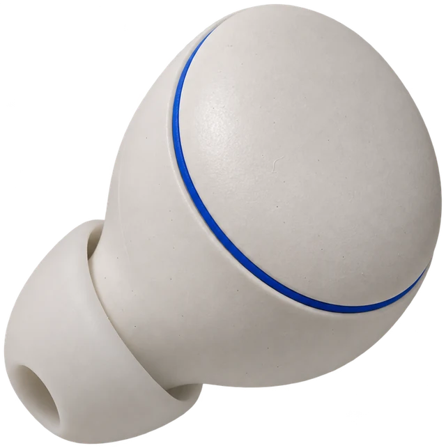
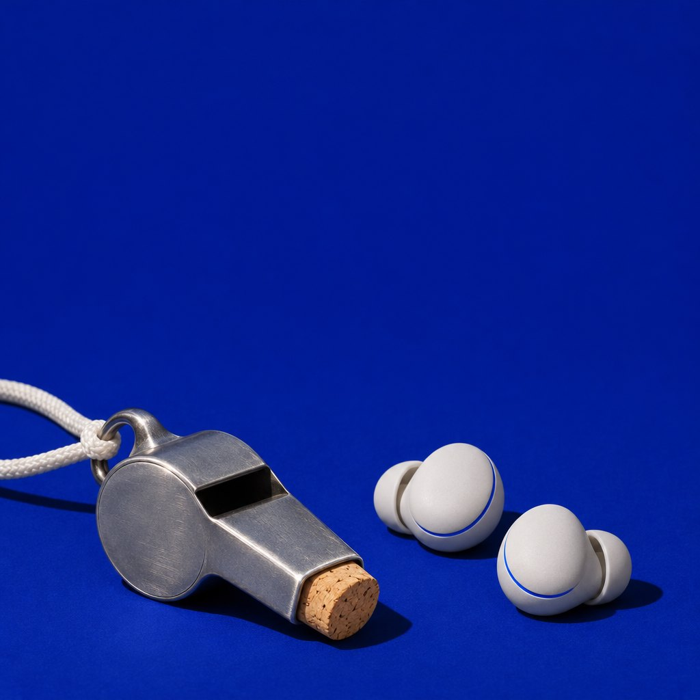
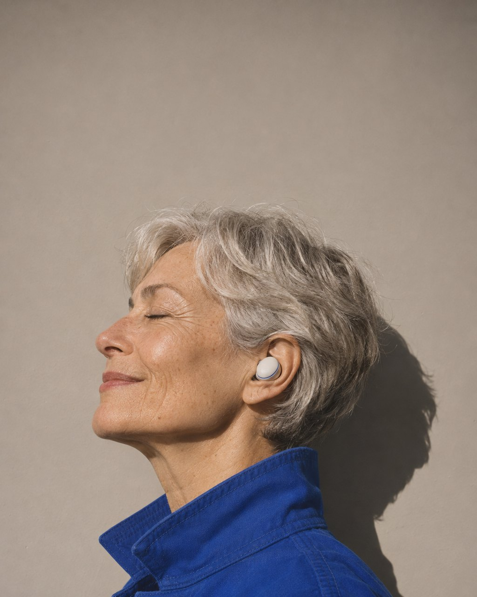
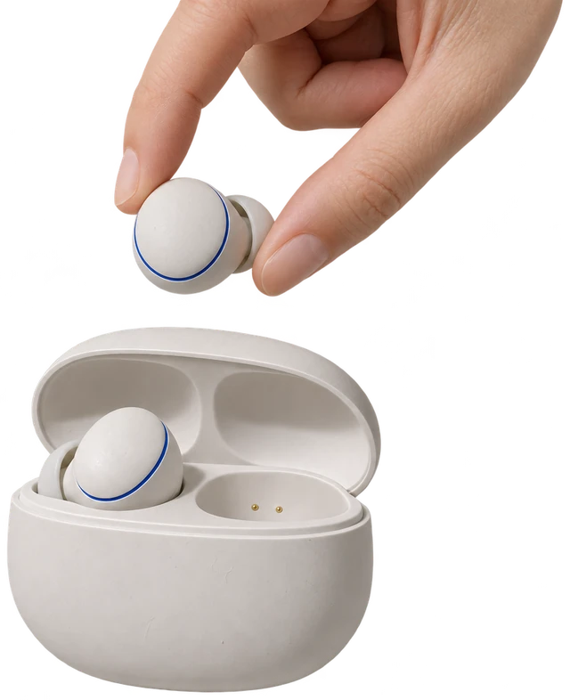
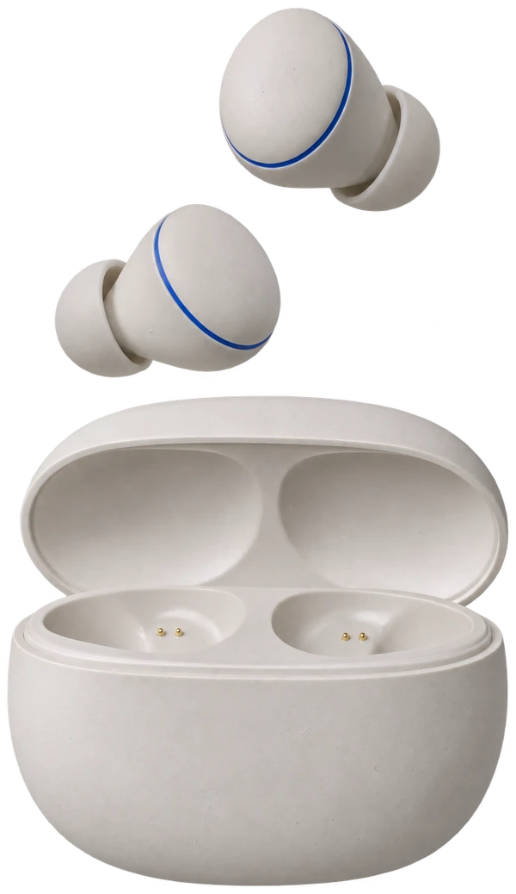
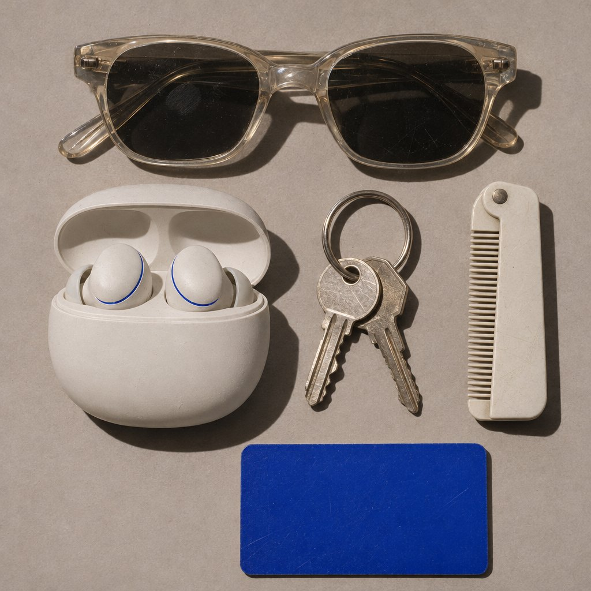
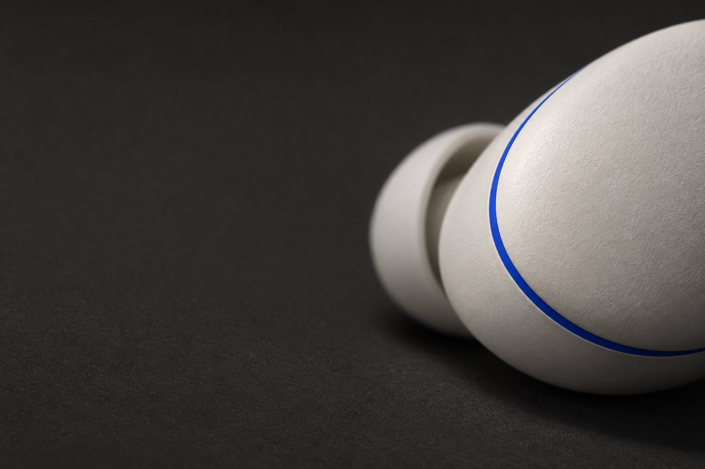
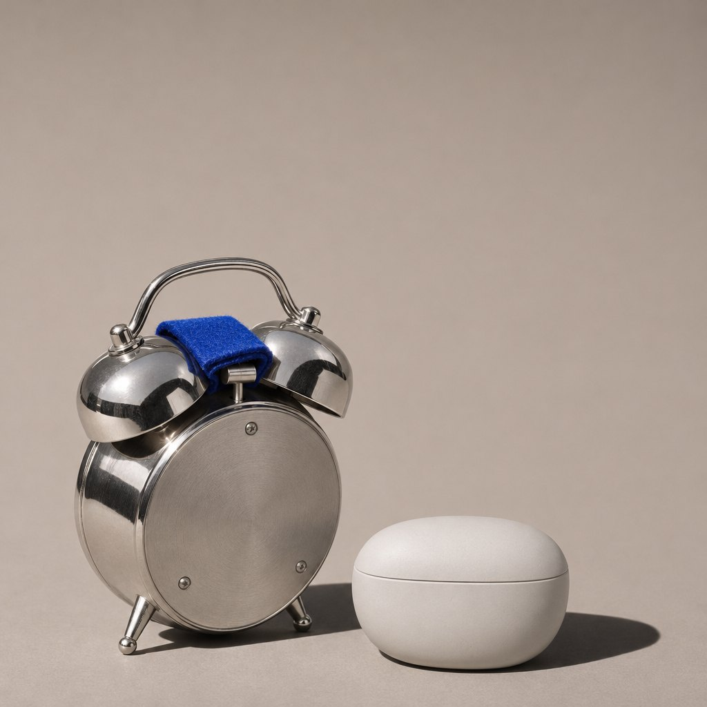
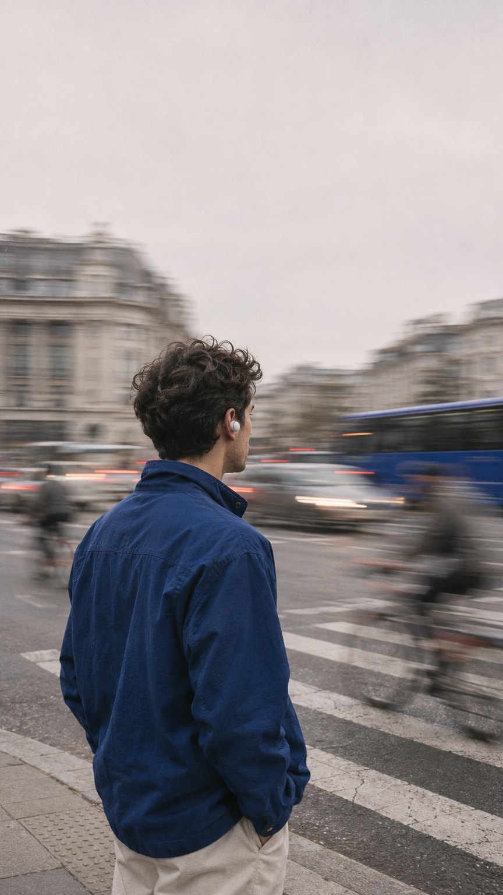

03 / 广告投放 · 出素材
40
个版本，同一个创意
7 种语言 · 4 种尺寸 · 示例

 Quiet fits in a pocket.
Quiet fits in a pocket.

도시를 음소거.
Silencia la ciudad.

 Mute
Mute Mute
Mute
 街を、ミュート。
街を、ミュート。




 Coupe le son de la ville.
Coupe le son de la ville.
 Mute
Mute
اكتم ضجيج المدينة.

40
个版本，同一个创意
7 种语言 · 4 种尺寸 · 示例